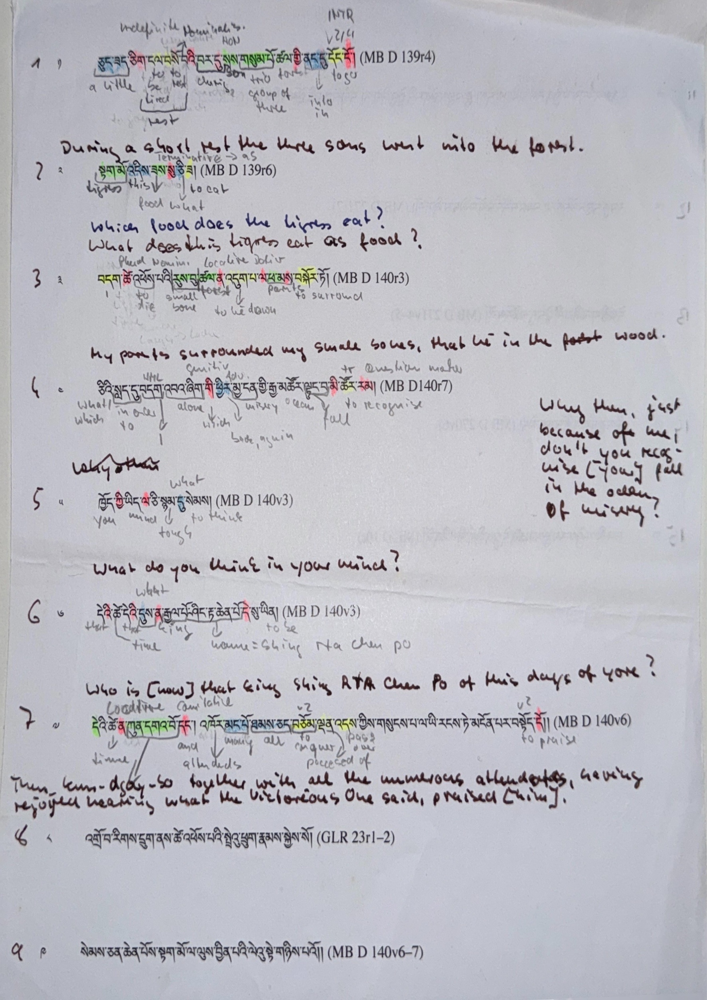

Second semester of the M.A. The particle drills in Bialek's textbook, by hand — five tools open at once, syllables copied between them, the thread lost between lookup and writing.
Each tool was good. The seams between them were where the time went.
Computer-Assisted Translation. Not the same as Machine Translation — the human stays in the chair. The tool handles the bookkeeping of segments, glossaries, and previously-translated material so the translator can spend their attention on the language.
A 49-year-old text editor that is also a Lisp environment. Every behavior is rewritable; every feature is a few lines of .el away.
I didn't pick Emacs for the CAT tool. The CAT tool came to Emacs because the rest of the work was already there.
Toggle #+SOURCE_MODE: parallel-sanskrit on a document and every per-segment file emits three DharmaMitra sections as foundation (Sanskrit translation, Tibetan translation, Sanskrit realignment from corpus search), with three interim Claude calls layered on top for analysis and the Sanskrit-Tibetan comparison — each Claude section a candidate for migration into the DM API.
Eight stages, one editor. Notes, footnotes, and a hand-written translation never get overwritten — re-running the analysis preserves them by design.
Six categories. Around thirty distinct capabilities. Mark anything you'd like to come back to in the discussion.
Two clusters — education and scholarship. Eight questions, all open.